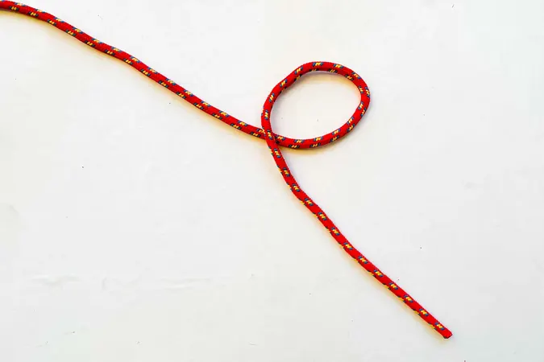
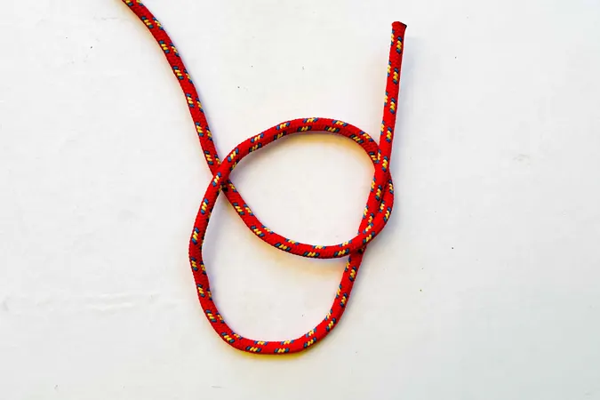
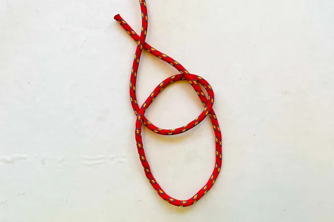
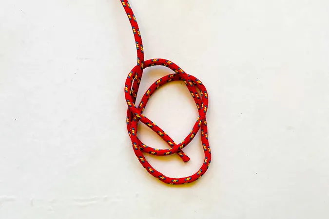
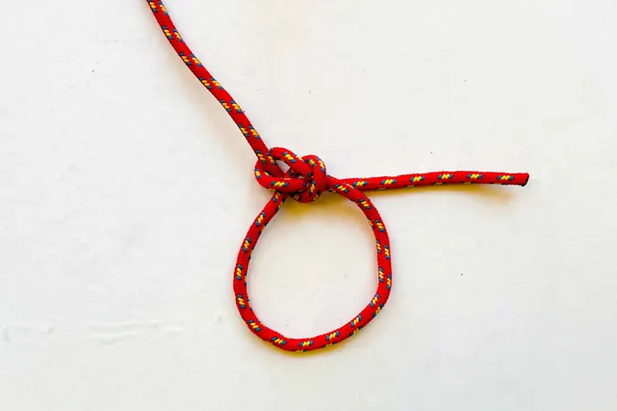

Bowline
A fixed loop at the end of a rope. Unlike the figure-eight, it stays easy to untie even after being loaded hard. Used to tie onto a tree, an anchor, or as a rescue loop. Always needs a stopper knot on the tail.
- Make a small loop in the rope, away from the end.
- Bring the working end up through that loop from underneath.
- Wrap the working end around the standing part and bring it back to the loop.
- Feed the working end back down through the same loop.
- Tighten, and finish with a stopper knot on the tail.
Step-by-step photos




